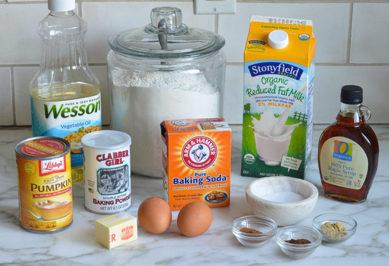
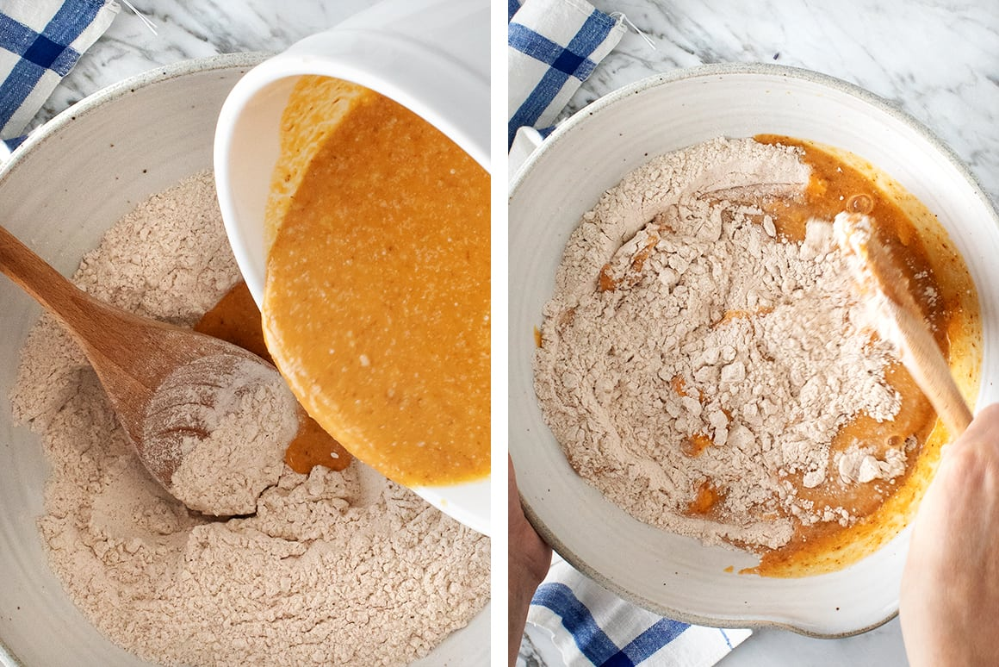

Pumpkin Pancake Recipe Ingredients
Did I mention? This pumpkin pancake recipe is totally vegan!
Pumpkin is the perfect natural egg replacer.
It gives these pancakes moisture and lift, so they’re light and fluffy,
even without eggs! Here’s what else makes this recipe one of my fall favorites:

A little flax – It thickens the batter and adds fiber and healthy fats.
A touch of cane sugar – It makes them lightly sweet.
Baking powder and baking soda – They help the pancakes puff up as they cook, making them thick
and fluffy.
Cinnamon– For that essential warm “pumpkin spice” flavor.
My homemade pumpkin pie spice would be great here too!
Coconut oil – For richness.
Almond milk – It adds moisture and loosens the batter.
vanilla – For warm depth of flavor.

Whisk together the wet and dry ingredients in separate bowls. Then,
pour the wet ingredients into the bowl of dry ingredients and stir until just combined –
careful not to overmix. At this point, you’re ready to cook! I hope you’re excited –
a hot stack of golden brown pumpkin pancakes is just minutes away.